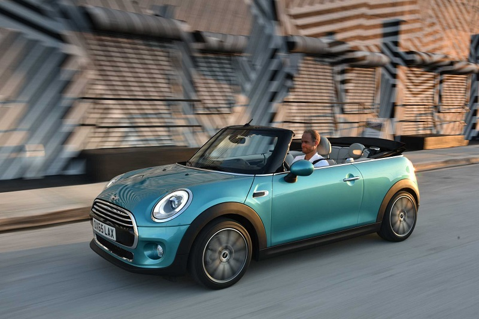
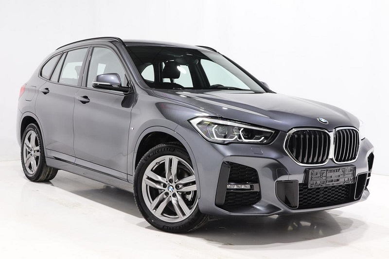
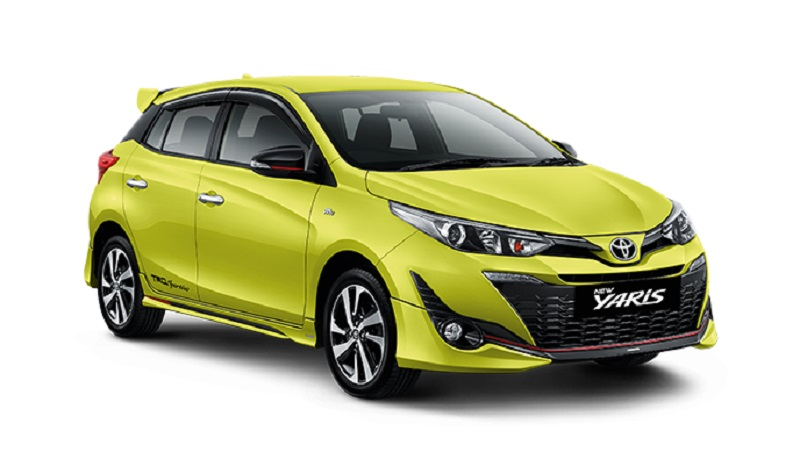
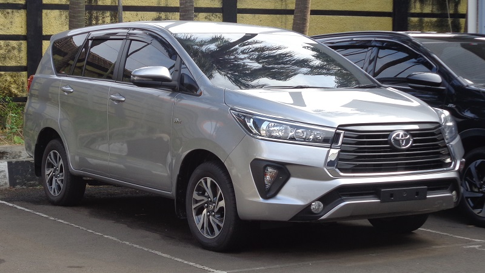

| Mobil |
Deskripsi |
Harga |
 |
Kapasitas mesin mobil ini maksimal 1.200 cc. Sengaja kubikasinya dibatasi, supaya tidak boros bahan bakar saat diajak berkendara di kepadatan kota.
Dan juga tampilannya ringkas dan ringan. |
Rp. 100 Jt |
|
|  |
Ciri khas convertible, memiliki atap terbuka. Bukan berarti tidak ada atapnya, tapi bisa dibuka dan tutup sesuai kebutuhan.
Mobil convertible juga memiliki dua jenis atap, soft top serta hard top. Kalau soft top ciri khasnya menggunakan kain atau material yang tidak terlalu kokoh.
Sementara hard top bentuknya seperti atap biasa dengan material dari logam. |
Rp 250 – 400 jutaan |
|
|  |
Sedangkan crossover lebih berfokus pada struktur bodi monokok, tapi berpenampilan layaknya SUV atau kendaraan off-road.
Entah dari aksesori pada atap, atau ground clearance yang dibuat sedikit lebih tinggi. |
Rp 350 – 400 jutaan |
|
|  |
Biasanya, mobil hatchback punya kesan sportif dan penuh gaya. Oleh karena itu,
peminatnya banyak dari kalangan anak muda atau konsumen berjiwa muda. |
Rp 250 jutaan |
|
 |
Ciri khasnya punya atap rendah, kap mesin menonjol ke depan, dan bagasi menjorok ke belakang.
Mobil sedan juga sering diasosiasikan dengan kemewahan dan kenyamanan.
Hanya saja kekurangannya punya daya tamping terbatas, cuma lima orang di dalam kabin. |
Rp 300 jutaan |
|
|  |
Ciri khas mobil MPV memiliki bodi bongsor dan agak mengotak. Kelebihannya adalah mampu memuat
banyak penumpang dengan kabin memiliki konfigurasi tiga baris bangku.
Oleh karena kabin yang lega, MPV juga sering disebut sebagai mobil keluarga.
Artinya dengan memilikinya, kamu dapat mengajak serta seluruh anggota keluarga berjalan-jalan. |
Rp 200 – 400 jutaan |
|